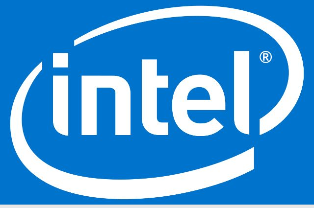

O futuro é a China
postado 06/06/2024Recém viralizou um vídeo onde uma influencer é mostrada realizando um pagamento com a mão em um estabelecimento chinês. A ferramenta foi desenvolvida pela empresa Tencent, mesma responsável pelo aplicativo de conversas WeChat. Implementada recentemente, a tecnologia chamada de Weixin Palm Payment está disponível na parte sul do país e usa câmeras infravermelhas para analisar a biometria e as veias da mão de cada pessoa.
Leia MaisProcessador para IA
postado 04/06/2024 A nova arquitetura de processadores Lunar Intel Lake foi oficialmente revelada nesta segunda-feira (3). Durante a Computex 2024, em Taiwan, a empresa revelou seus planos para o futuro dos computadores. Entre os destaques da nova geração, a Intel reforça o uso de inteligência artificial (IA) para tornar os notebooks mais poderosos e com melhor gerenciamento de bateria.
Leia Mais